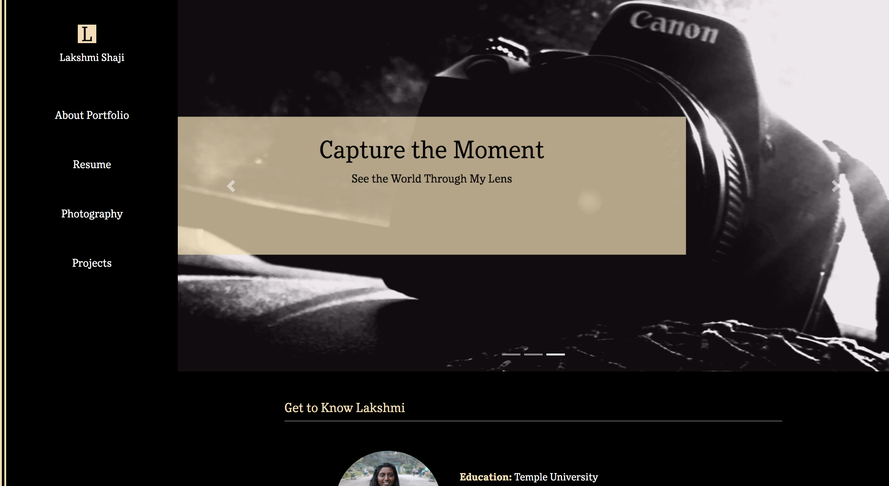
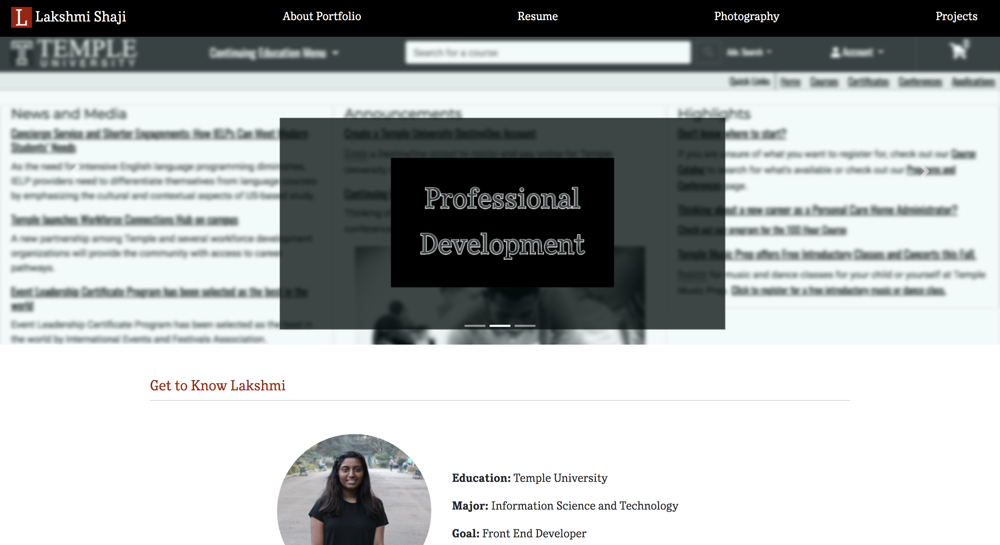
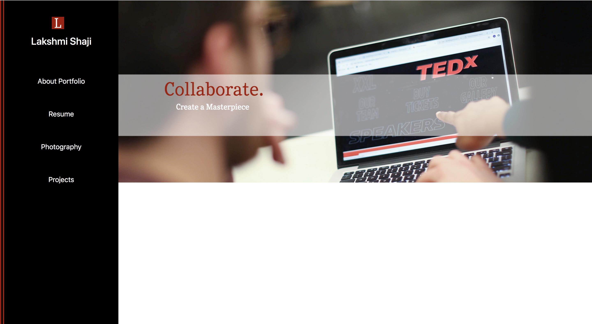
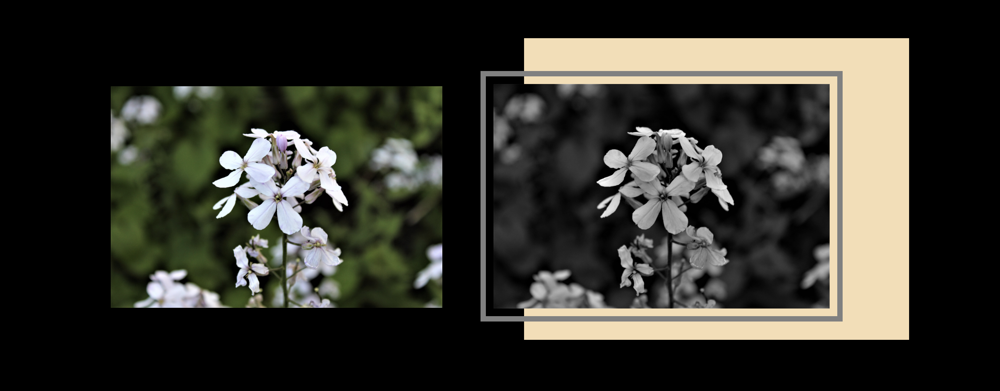

mylaksha.com
Buliding my Porttfolio ‐ 2019
mylaksha.com
The Idea:
Creating this portfolio has been a professional development goal of mine since 2018. I want to use this site as a platform to showcase the skills that I currently have and actively improve the site as I develop more skills. I want to present my qualifications in a nontraditional way and eventually, as the years pass by, I hope to have this site to look back on to reflect on my professional advancements.
The Theme:
The content that I wanted to display on each of the places remained the same as I eveloved the site. As I was building the photography page, I came across this muted shade of yellow that played well with black and white alike. In order to keep uniformity alive across all pages, black,white, gray, and wheat became my theme colors.
Original:

Edit:

Final:
The Domain and The Logo:
Locking in a domain that worked with the purpose of the site
was hard. I managed to my identity, I chose mylaksha.com because my laksha
translates
to my goal or my aim. Therefore, my portfolio is appropriately named to set my up to
achieve
my goals.
This project gave me the oppurtunity to explore what it is like to set a website up
from top to bottom. I was able to purchase and wire a domain using and external site
for the first time. Additionally, the creation of this site took careful planning, development
and organized display of content.
The logo, along with the content was changed accordingly as the theme evolved.
The logo is a very simple representation of the site's domain. The L can be seen
as a representation of my name, Lakshmi or Laksha.
Original:
Final:
Photography CSS:

My Tools:
This portfolio is created with the use of Bootstarp version 4.3 and additional CSS accordingly written for each page.
Edits were made to existing photography with the use of Adobe Spark in order to create the carousel content and logo.
Most of the photos used on this site come form my own photography portfolio.
Some photos have been taken from event photo banks with the permission of the perspective photographer.
When in doubt, clarify! W3Schools was a great resource to use when I faced a problem!

TedxTempleU.com
Team Collaborations ‐ 2019